| Types de motos | Description | Photos |
|---|---|---|
| Les Utilitaires | Les petites et moyennes cylindrées sont économiques et offrent le meilleur rapport qualité/prix.
Outre les motos dites "basiques-utilitaires", les roadsters de cylindrée moyenne sont également prisés par les débutants pour leur facilité de prise en main. Elles sont souvent utilisées dans le cadre professionnel en ville. |
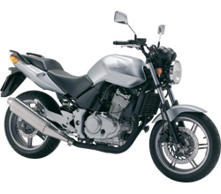 |
| Les Roadsters | Un roadster se caractérise par l'absence de carénage. L'accent est mis sur les sensations d'accélération, de nervosité et de maniabilité.
Le rapport poids/puissance élevé permet d'avoir un moteur riche en couple. Bien que destinée à une utilisation urbaine, cette moto se prête également à des trajets routiers, mais l'absence de carénage expose le conducteur à la pression du vent et il se fatigue plus vite. Elle peut être dotée d'équipements spécifiques pour un meilleur confort de conduite comme une bulle (petit pare-brise, saut de vent), une tête de fourche... On compte dans cette catégorie de plus en plus de roadsters sportifs, dotés de moteurs plus puissants, capables de très fortes accélérations. Les roadsters associent plaisir, sportivité, et économie. |
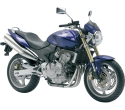 |
| Les Sportives | Modèle dérivé des motos utilisées en compétition de vitesse.
Elle est plus petite et plus légère qu'une routière donc capable d’accélération et de vitesse élevée. Parmi les plus puissantes, citons la série des GSX-R de Suzuki, notamment avec la Hayabusa GSX 1300 R, fer de lance de la marque et première moto de série à avoir dépassé les 300 km/h dans sa version libre (non bridée). Désormais la Kawasaki H2R (380 km/h) les détrônent. La législation de quelques rares pays impose la mise en place d’un limiteur de puissance (le bridage). En France, par exemple, la puissance est limitée à 106 cv. Les gros inconvénients de ces motos sont qu'elles sont peu maniables à basse vitesse et relativement inconfortables. Peu adaptées au transport d'un passager ou de bagages, elles sont très chères à l'achat et à l'entretien. |
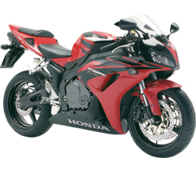 |
| Les Trails | Ce sont des motos capables d'évoluer aussi bien sur route que sur chemin.
La mode des trails a été lancé à la fin des années 70, avec les débuts des grandes compétitions d'endurance qui avaient lieu sur le sol africain. Ces machines sont dérivées de motos d'enduro ou de cross, mais avec tout l'équipement pour pouvoir circuler sur route. Cette catégorie s'est diversifiée et adaptée à la route avec l'apparition des trails routiers qui adoptent la même architecture de construction mais avec des adaptations (grands réservoirs, bagagerie, protections contre les intempéries) permettant une grande polyvalence d'utilisation mais une facilité en hors-piste moindre. Moins chères que les motos de tourisme, elles représentent un marché important. |
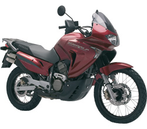 |
| Les Customs | Cette moto se caractérise par l'absence de carénage et une position de conduite spécifique avec les pieds en avant.
Elle imite le style des machines américaines des années 1930 au début des années 1960, comme celles produites par Harley-Davidson, Indian, Excelsior et Henderson. Cette catégorie s'est diversifiée avec l'apparition de la mode "rétro" et la remise au goût du jour de modèles des années 1950-1960. Cette catégorie de moto un peu à part est le reflet le plus affirmé de l'esprit "rebelle" porté par le motard. Les puristes préféreront les modèles américains, et les personnalisations du véhicule sont classiques. |
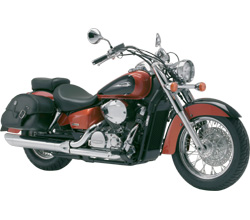 |
| Les Routières | Conçues pour les longs trajets routiers, ce type de moto privilégie le confort de conduite.
Elle se caractérise par une position de conduite proche de la verticale pour permettre de conserver le dos droit, les bras tendus et les jambes dépliées. Les motos routières accueillent facilement un passager et une bagagerie volumineuse (top case, valise, sacoche de réservoir). La plupart sont dotées d'un moteur de forte cylindrée, souvent supérieure à 1 000 cm³, d'un carénage plus ou moins enveloppant destiné à protéger du vent et des intempéries. Elles sont également équipées d'un réservoir permettant une autonomie de plusieurs centaines de kilomètres. Les motos de cette catégorie se déclinent en gammes spécialisées qui partent du grand tourisme, avec les modèles les plus grands et les plus lourds, puis les routières, et enfin les routières sportives. La conduite sur route et autoroute est très agréable. |
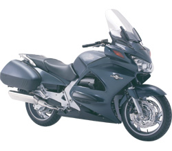 |
| Les Grand Tourisme (GT) | Plus qu’une moto, la Goldwing se présente comme un privilège.
L’emblématique porte drapeau de Honda se met à votre disposition pour vous faire profiter de toutes ses lettres de noblesse. Un confort à tous les étages avec l’onctuosité de son 6 cylindres à plat, une sellerie ergonomique qui se montrera optimale sur les longs parcours mais aussi un équipement remarquable et novateur surtout en terme de sécurité avec le 1er airbag disponible sur un 2 roues. La Goldwing a traversé le temps pour s’imposer comme la référence de la plus réjouissante des expériences de conduite que l’on puisse vivre aujourd’hui sur deux roues. La conduite sur route et autoroute est très agréable. |
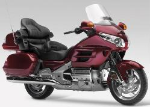 |
| Les Néo-Rétro | Café Racer, Scrambler, Racer, Vintage...
Les motos Néo-Rétro se distinguent par leur look des années 60-70 tout en étant équipées des technologies modernes. |
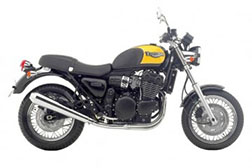 |
| Les Cross | Ce sont des motos non homologuées pour une utilisation sur la voie publique, ce qui réduit leur usage sur terrains privés destinés à cet usage. | 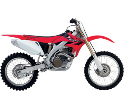 |
| Les Enduro | Ce sont des motos de cross, auxquelles on ajoute des phares, une plaque d'immatriculation, quelques pièces pour permettre une homologation en vue d'un usage sur la voie publique (chemin de campagne, route, etc...) | 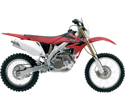 |
| Les Trial | Moto spécialement conçue pour franchir des obstacles.
Machines destinées aux loisirs (moto verte) ou à la compétition. |
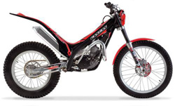 |
| Les Supermotard | Ce sont des motos de cross ou d'enduro équipées de jantes larges sur lesquelles sont montées des pneus de route.
Ce type de moto a été conçu pour faire des courses sur des circuits ayants des parties en terre et des parties en bitume... |
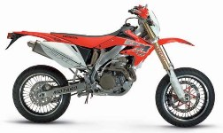 |
){kind=link}
){kind=link}
){kind=link}
){kind=link}
){kind=link}
){kind=link}
){kind=link}
){kind=link}
){kind=link}
){kind=link}
){kind=link}
){kind=link}